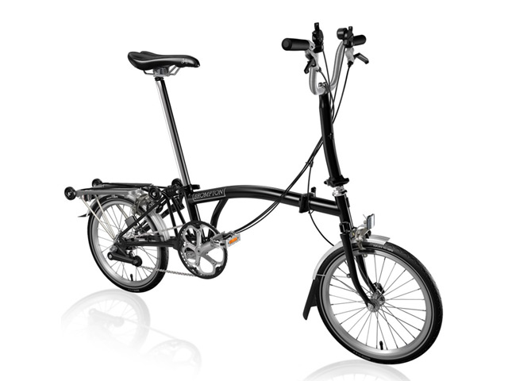

Lo que sí está claro es que la bicicleta es el resultado de la evolución de un juguete, en concreto del Célérifère que venía a ser un chasis macizo de madera con forma de animal y con dos ruedas con el que sólo se podía ir en línea recta. Como indica su nombre este juguete nació en Francia y en concreto en París el 1791 en plena revolución francesa de la mano del conde Mede de Sivrac. La idea genial de Sivrac fue colocar las dos ruedas en tandem en lugar de una lado de otro como se venía haciendo desde antiguo. Este juguete de niños ricos y que los ingleses plagiaron creando su propio Dandy Horse permaneció inalterado por 20 años antes de que alguien le colocase un artilugio para cambiar de dirección.
Será en 1817 el ingeniero alemán Karl Von Drais quien aplicando la ingeniería de la época aplicada a los vehículos le adaptará una dirección. Estas modificaciones darán origen a la llamada draisiana la cual, sin embargo, aún pareciéndose más a las bicicletas actuales se manejaba como un patinete, o sea, impulsada por el arrastre de los pies sobre el suelo. Pasarán unos 20 años para que el escocés Kirkpatrick Macmillan en 1839 incorporase unos cigueñales que a través de dos bielas permitían girar la rueda trasera de forma rudimentaria.


Las bicicletas de montaña (también conocidas como MTB) están diseñadas para “fuera de ruta” por lo que son bastante resistentes. Están equipadas con llantas anchas con dibujos marcados para mejorar el agarre en terrenos sueltos. Regularmente usan manubrios rectos o de doble altura.
Las MTB se pueden encontrar sin suspensión (rígidas), con suspensión delantera (hardtail) o con doble suspensión (full-suspension) dependiendo de su especialidad:
Cross country
Enduro
Downhill
Freeride

Son bicicletas orientadas a obtener velocidad en pavimento, de construcción más ligera que otras bicicleta, están dotadas con ruedas más grandes, delgadas y provistas de llantas angostas y con dibujo liso. Las bicis de ruta utilizan manubrios drop-bar para lograr una postura más aerodinámica.

Las bicicletas híbridas son bastante versátiles ya que combinan características de las bicis de montaña y de las de ruta.Estas bicicletas nacieron como una solución para quienes necesitan una bicicleta para la ciudad, pero que tenga la flexibilidad de ser usada en diferentes terrenos. Los cuadros son resistentes y con una geometría que permite adoptar una posición cómoda que permite relajar los brazos y el cuello.

En este caso nos referimos como bicicleta urbana a las bicis estilo holandés (Dutch).
Estas bicicletas fueron concebidas para la ciudad, por lo que son de construcción bastante solida tanto en su cuadro como en sus ruedas. Están perfectamente adecuadas para soportar las condiciones de una ciudad (baches, banquetas, topes, etc.)
Por lo general cuenta con guardabarros para días de lluvia, portaequipaje y/o canasta para transportar todo lo que necesitas para ir al trabajo, al supermercado, etc. Una característica común en este tipo de bicicletas es la presencia de luces para mantenernos siempre visibles a los conductores.
Normalmente tienen una sola velocidad, o sistema de cambios internos de ser necesario.
Estas bicicletas permiten una posición relajada de torso y brazos.

La gran mayoría de estas bicicletas usan ruedas pequeñas, siendo 16 y 20″ las más comunes, aunque es posible encontrar plegables con rodados más convencionales. Casi todas las plegables están diseñadas para uso urbano, no obstante existen modelos que aguantan viajes largos sin problemas.
Un inconveniente de de las ruedas pequeñas es que son más sensibles a las imperfecciones del camino, aunque si lo que necesitas es una bici que puedes llevar contigo en todo momento no hay como una plegable.
En general vienen equipadas con 18- 20 cambios.

Si bien su conceptp es el de ser una bicicleta sencilla, se han convertido en algo así como las bicicletas de culto para el ciclismo urbano. Su principal característica es su diseño simple y en muchos casos minimalista, sumamente eficientes y funcionales.
Esta familia de bicis viene en varias formas y estilos; las hay con manubrios rectos, de doble altura, drop bars, bullhorns, etc.
Están equipadas con una sola velocidad por lo que requieren mucho menos mantenimiento que otras bicicletas. La diferencia entre las single-speed y las fixies es que en las single-speed utilizan una rueda libre, mientras que las fixies utilizan un piñón fijo.

Este tipo de bicicletas están diseñadas para trayectos cortos y sobre pavimento preferencialmente. Su geometría y manubrio característico permiten una postura sumamente relajada. Estas bicicletas suelen ser pesadas y usan llantas anchas lo que las hace poco eficientes en trayectos de más de 10km. Normalmente tienen una sola velocidad aunque algunos fabricantes tienen modelos con tres velocidades. Otra característica común en las cruiser son los frenos de contrapedal.

Las BMX utilizan cuadros pequeños y resistentes, ideales para saltos y acrobacias. Existen diferentes variables de estas bicicletas, algunas con llantas anchas para usarse en terrenos sueltos y otras con llantas un poco más delgadas y lisas para usarse en rampas o en la calle. Estas bicicletas no son eficientes como medio de transporte.

Estas bicicletas se usan para recorrer largas distancias y cargar peso. Sus cuadros son muy robustos e incluyen monturas para instalar rack trasero y delantero además de varias caramañolas. Aunque la gran mayoría de estas bicicletas utilizan drop-bars también son comunes los manubrios de trekking, rectos y de doble altura, dependiendo del tipo de viaje que se vaya a realizar.
Tienen un gran rango de velocidades: suficientemente bajas que facilitan subir pendientes bastante pronunciadas al estar completamente cargadas y velocidades altas para mantener la velocidad aun en las bajadas. Están equipadas con frenos potentes, generalmente frenos de disco o cantilever (los tradicionales).Los rodados comunes son de 26″

En la actualidad se puede encontar versiones de pedaleo asistido (eléctricas) de casi cualquier tipo de bicicleta. Las bicicletas eléctricas son todas aquellas bicis que utilizan un motor para asistir el pedaleo. Su principal ventaja es a la hora de subir pendientes, pedalear contra el viento (hay lugares donde el viento es muy intenso) o para quien tiene que pedalear largas distancias para ir al trabajo y quiere reducir el esfuerzo. Por otro lado estas bicis son más costosas y pesadas que el resto. ¿Quieres ver algunas?

Al ser utilizadas para mover carga, esta familia de bicis utilizan cuadros sumamente fuertes, con un buen sistema de frenos (frenos de disco, tambor, son comunes) y una relación de velocidades adecuada para mover el peso extra. Existen bicis cargo de diferentes tipos y diferentes capacidades dependiendo de lo que se vaya a mover. Otra variante es el tipo de area de carga y el posicionamiento de la carga:
Sobre la rueda delantera, trasera o ambas
Entre el manubrio y la rueda delantera mejor conocidas como Long John
Detrás del ciclista conocidas como Longtail
Entre ruedas paralelas ya sea delanteras o traseras (triciclos)

Son de reciente aparición y su uso principal es sobre terrenos con nieve o arena, grandes piedras, raíces, et. La principal característica de estas bicicletas son sus llantas rodado 26″ sumamente anchas (normalmente de entre 3 y 3.6 pulgadas). La geometría de su cuadro es muy similar a una bicicleta de montaña con la diferencia de que usa tijera/horquilla y vainas con holgura adecuada para las ruedas gordas. Estas bicis están equipadas con velocidades múltiples y frenos de disco.
– Bergamont.
– Bianchi.
– BMC.
– Bottechia.
– BTwin.
– Bulls.
– Canyon.
– Colnago.
– Commençal.
– Cube.
– Felt.
– Focus.
– Fuji.
– Ghost.
– GT.
– Haibike.
– Isaac.
– Kona.
– Kross.
– KTM.
– Kuota.
– Lapierre.
– Look.
– Norco.
– Olympia.
– Pinarello.
– Radon.
– Ridley.
– Rose.
– Stevens.
– Stoeckli.
– Storck.
– Univega.
– Wilier.
En conmemoración de esta fecha se creó en Latinoamérica un evento exclusivo para fomentar el uso de la bicicleta como medio de transporte sustentable y cero emisiones, que además contribuye con la vida sana y promover el deporte, dicho evento se conoce como «Bikeday», el cual se celebra oficialmente cada 19 de abril, con descuentos y promociones de grandes actores de la industria. El creador de esta idea es un trabajador del medio relacionado con el ciclismo: Felipe Weinroth. Durante esta celebración se incrementan sustancialmente las ventas de bicicletas en relación al acontecimiento.


 2
2 3
3 4
4 5
5 7
7 8
8